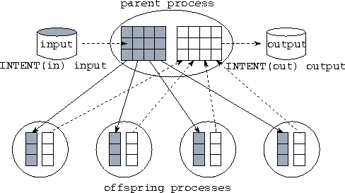

![[DBPP]](pictures//asm_color_tiny.gif)


![[Search]](pictures//search_motif.gif)
FM extends the basic task/channel model by allowing ordinary variables, as well as ports, to be passed as actual arguments in a process call. These values can be both read and modified inside the process, and updated values are available to the parent process when the process returns.
This capability is not essential: a value can always be passed to a process by defining a channel, sending the value on the outport, and passing the inport to the process as an argument. A similar strategy can be used to return a value from a process. However, normal argument passing often produces more concise and easy-to-understand programs. See Program 6.8 for a comparison of the two approaches.
If unrestricted, argument passing could compromise determinism. The result computed by a program that passed the same variable to two processes could depend on the order in which those processes executed. For example, the following code fragments could be nondeterministic if a call to proc modifies the argument x and this variable is used in subsequent computation.
PROCESSDO i = 1,2 PROCESSES
PROCESSCALL proc(i,x) PROCESSCALL proc(1,x)
ENDPROCESSDO PROCESSCALL proc(2,x)
... ENDPROCESSES
FM semantics ensure deterministic execution in these situations. Variables named as process arguments in a process block or do-loop are passed by value; that is, they are copied. In the case of arrays, the number of values copied is determined by the dummy argument declaration in the called process. Values are also copied back upon termination of the process block or do-loop, in textual and do-loop order. These copy operations ensure deterministic execution even when concurrent processes update the same value. Hence, these code fragments are deterministic even if proc does modify its argument. In both cases, the value computed by the process proc(2,x) is used to update x.
Copying variables on process call and return can be expensive. Sometimes this copying is not necessary; for example, if a variable is only read by a process, not modified, then there is no need to copy it on return. We can provide INTENT declarations for dummy arguments to specify when copying is not to be performed. Three INTENT declarations are supported, as follows.
¯ INTENT(in) var-list ¯ : Copy on call only.INTENT(out) var-list : Copy on return only.
INTENT(inout) var-list : (Default) Copy on call and return.
We note that FM and Fortran 90 intent declarations have slightly different semantics. In a Fortran 90 subroutine, these declarations are assertions: intent(in) asserts that an argument is not written by the subroutine, and intent(out) asserts that the argument is not read. These assertions have no semantic content: a program with incorrect declarations is invalid. In contrast, INTENT declarations in an FM process have semantic content: they specify whether copying is to be performed, and they cannot be invalid.
 .
. Ring Pipeline:
Ring Pipeline:
We use a modified version of Program 6.2 to illustrate the use of INTENT declarations. Program 6.9 extends Program 6.2 by incorporating statements that read input data and write output data. The inport and outport declarations and the CHANNEL statements are as in Program 6.2 and are not shown here. The main program uses routines ring_read and ring_write to read and write two-dimensional arrays input and output, respectively. These arrays contain initial particle positions and final particle positions, respectively.

Figure 6.6: Argument passing and INTENT declarations in the ring
pipeline program. The parent process reads the input array, which is of
size , from a file and passes one column to each of four
ringnode processes. The ring processes communicate among
themselves and compute a column of the output array; upon
termination, this array is copied back to the parent, which writes it
to a file.
Argument passing is used to pass the appropriate components of these arrays to the subdomain processes, with INTENT declarations ensuring that input is copied only on call and output only on return (Figure 6.6). This centralized I/O strategy has the advantage of simplicity. A disadvantage on many computer systems is that it limits scalability, as the size of problem that can be solved is constrained by the need to fit the input and output arrays into a single processor's memory.
© Copyright 1995 by Ian Foster